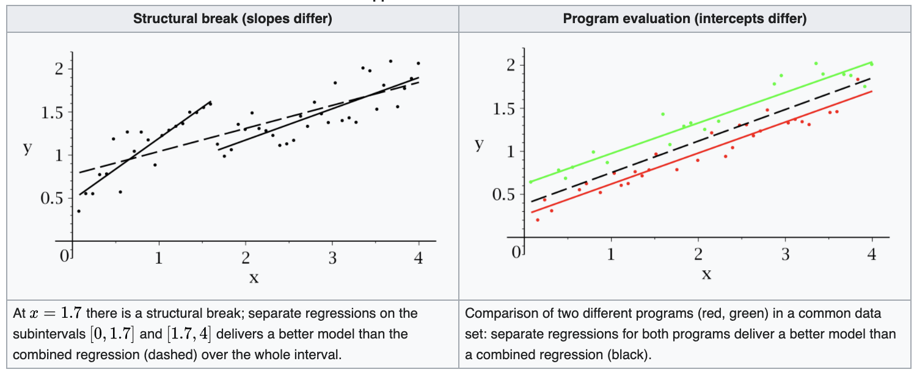

Linear Regression - Inference¶
We first describe the properties of OLS estimator $\hat{\boldsymbol{\beta}}$ and the corresponding residuals $\hat{\boldsymbol{\varepsilon} }$. Then we introduce sum of squares, $R$-squared, hypothesis testing and confidence intervals. All these methods assume normality of the error terms $\varepsilon_i \overset{\text{iid}}{\sim} N(0, \sigma^2)$ unless otherwise specified.
Coefficients $\boldsymbol{\beta}$¶
Unbiasedness¶
The OLS estimators are unbiased since
$$\begin{align} \operatorname{E}\left( \hat{\boldsymbol{\beta} } \right) &= \operatorname{E}\left( (\boldsymbol{X} ^\top \boldsymbol{X} ) ^{-1} \boldsymbol{X}^\top \boldsymbol{y} \right) \ &= (\boldsymbol{X} ^\top \boldsymbol{X} ) ^{-1} \boldsymbol{X} ^\top \operatorname{E}\left( \boldsymbol{y} \right) \ &= (\boldsymbol{X} ^\top \boldsymbol{X} ) ^{-1} \boldsymbol{X} ^\top \boldsymbol{X} \boldsymbol{\beta} \ &= \boldsymbol{\beta} \end{align}$$
when $p=2$,
$$\begin{align} \hat{\beta}{1} &=\frac{\sum{i=1}^{n}\left(x_{i}-\bar{x}\right)\left(y_{i}-\bar{y}\right)}{\sum_{i=1}^{n}\left(x_{i}-\bar{x}\right)^{2}} \ \end{align}$$
To prove unbiasedness, using the fact that for any constant $c$,
$$ \sum_i (x_i - \bar{x})c = 0 $$
Then, the numerator becomes
$$\begin{align} \sum_{i=1}^{n}\left(x_{i}-\bar{x}\right)\left(y_{i}-\bar{y}\right) &=\sum\left(x_{i}-\bar{x}\right)\left(\beta_{0}+\beta_{1} x_{i}+u_{i}\right) \ &=\sum\left(x_{i}-\bar{x}\right) \beta_{0}+\sum\left(x_{i}-\bar{x}\right) \beta_{1} x_{i} +\sum\left(x_{i}-\bar{x}\right) u_{i} \ &=\beta_{0} \sum\left(x_{i}-\bar{x}\right)+\beta_{1} \sum\left(x_{i}-\bar{x}\right) x_{i} +\sum\left(x_{i}-\bar{x}\right) u_{i} \ &=\beta_{1} \sum\left(x_{i}-\bar{x}\right)^2 +\sum\left(x_{i}-\bar{x}\right) u_{i} \ \end{align}$$
Hence
$$ \begin{equation} \hat{\beta}{1}=\beta{1}+\frac{\sum\left(x_{i}-\bar{x}\right) u_{i}}{\sum \left(x_{i}-\bar{x}\right)^{2}} \end{equation} $$
and
$$ \operatorname{E}\left( \hat{\beta}_1 \right) = \beta_1 $$
Variance¶
The variance (covariance matrix) of the coefficients is
$$\begin{align} \operatorname{Var}\left( \boldsymbol{\beta} \right) &= \operatorname{Var}\left( (\boldsymbol{X} ^\top \boldsymbol{X} ) ^{-1} \boldsymbol{X}^\top \boldsymbol{y} \right) \ &= (\boldsymbol{X} ^\top \boldsymbol{X} ) ^{-1} \boldsymbol{X}^\top \operatorname{Var}\left( \boldsymbol{y} \right) \boldsymbol{X} (\boldsymbol{X} ^\top \boldsymbol{X} ) ^{-1} \ &= \sigma^2 (\boldsymbol{X} ^\top \boldsymbol{X} ) ^{-1}\ \end{align}$$
:::{admonition} What is the $(j,j)$-th entry $\operatorname{Var}\left( \hat{\beta}_j \right)$?
More specifically, for the $j$-th coefficient estimator $\hat{\beta}_j$, its variance is,
$$\begin{align} \operatorname{Var}\left( \hat{\beta}j \right) &= \sigma^2 \left[ (\boldsymbol{X} ^\top \boldsymbol{X} )^{-1} \right]{[j,j]} \ &= \sigma^2 \frac{1}{1- R^2_{j}} \frac{1}{\sum_i (x_{ij} - \bar{x}j)^2} \ &= \sigma^2 \frac{TSS_j}{RSS_j} \frac{1}{TSS_j} \ &= \sigma^2 \frac{1}{\sum_i(\hat{x}{ij} - x_{ij})} \ \end{align}$$
where $R_j^2$, $RSS_j$, $TSS_j$, and $\hat{x}_{ij}$ are the corresponding representatives when we regress $X_j$ over all other explanatory variables.
Note that the value of $R^2$ when we regressing $X_1$ to an constant intercept is 0. So we have the particular result below. :::
When $p=2$, the inverse $(\boldsymbol{X} ^\top \boldsymbol{X} )^\top$ is
$$ \begin{array}{c} \left(\boldsymbol{X} ^\top \boldsymbol{X} \right)^{-1} =\frac{1}{\sum_{i=1}^{n} \left(x_{i}-\bar{x}\right)^{2}}\left[\begin{array}{cc} \bar{x^2} & - \bar{x} \
\bar{x} & 1 \end{array}\right] \end{array} $$
the variance of $\hat{\beta}_1$ is
$$\begin{align} \operatorname{Var}\left( \hat{\beta}1 \right) &= \operatorname{Var}\left( \beta{1}+\frac{\sum\left(x_{i}-\bar{x}\right) u_{i}}{\sum \left(x_{i}-\bar{x}\right)^{2}} \right)\ &= \frac{\operatorname{Var}\left( \sum\left(x_{i}-\bar{x}\right) u_{i} \right)}{\left[ \sum \left(x_{i}-\bar{x}\right)^{2} \right]^2}\ &= \frac{\sum\left(x_{i}-\bar{x}\right)^2 \operatorname{Var}\left( u_{i} \right)}{\left[ \sum \left(x_{i}-\bar{x}\right)^{2} \right]^2}\ &= \sigma^2 \frac{\sum\left(x_{i}-\bar{x}\right)^2 }{\left[ \sum \left(x_{i}-\bar{x}\right)^{2} \right]^2}\ &= \frac{\sigma^2}{\sum_{i=1}^n \left(x_{i}-\bar{x}\right)^{2}}\ \end{align}$$
We conclude that
The larger the error variance, $\sigma^2$, the larger the variance of the coefficient estimates.
The larger the variability in the $x_i$, the smaller the variance.
A larger sample size should decrease the variance.
In multiple regression, reduce the relation between $X_j$ and other covariates (e.g. by orthogonal design) can decreases $R^2_{j}$, and hence decrease the variance.
A problem is that the error $\sigma^2$ variance is unknown. In practice, we can estimate $\sigma^2$ by its unbiased estimator $\hat{\sigma}^2=\frac{\sum_i (x_i - \bar{x})}{n-2}$ (to be shown [link]), and substitute it into $\operatorname{Var}\left( \hat{\beta}_1 \right)$. Since the error variance $\hat{\sigma}^2$ is estimated, the slope variance $\operatorname{Var}\left( \hat{\beta}_1 \right)$ is estimated too, and hence the square root is called standard error of $\hat{\beta}$, instead of standard deviation.
$$\begin{align} \operatorname{se}\left(\hat{\beta}_{1}\right) &= \sqrt{\widehat{\operatorname{Var}}\left( \hat{\beta}1 \right)}\ &= \frac{\hat{\sigma}}{\sqrt{\sum \left(x{i}-\bar{x}\right)^{2}}} \end{align}$$
Efficiency (BLUE)¶
- Theorem (Gauss–Markov)
The ordinary least squares (OLS) estimator has the lowest sampling variance within the class of linear unbiased estimators, if the errors in the linear regression model are uncorrelated, have equal variances and expectation value of zero. In abbreviation, the OLS estimator is BLUE: Best (lowest variance) Linear Unbiased Estimator.
:::{admonition,dropdown,seealso} Proof
Let $\tilde{\boldsymbol{\beta}} = \boldsymbol{C} \boldsymbol{y}$ be another linear estimator of $\boldsymbol{\beta}$. We can write $\boldsymbol{C} = \left( \boldsymbol{X} ^\top \boldsymbol{X} \right)^{-1} \boldsymbol{X} ^\top + \boldsymbol{D}$ where $\boldsymbol{D} \ne \boldsymbol{0}$. Then
$$\begin{align} \operatorname{E}\left( \tilde{\boldsymbol{\beta} } \right) &= \operatorname{E}\left( \boldsymbol{C} \boldsymbol{y} \right)\ &= \boldsymbol{C} \operatorname{E}\left( \boldsymbol{X} \boldsymbol{\beta} + \boldsymbol{\varepsilon} \right)\ &= \boldsymbol{\beta} + \boldsymbol{D} \boldsymbol{X} \boldsymbol{\beta} \ \end{align}$$
Hence, $\tilde{\boldsymbol{\beta}}$ is unbiased iff $\boldsymbol{D} \boldsymbol{X} = 0$.
The variance is
$$\begin{align} \operatorname{Var}\left( \tilde{\boldsymbol{\beta} } \right) &= \boldsymbol{C}\operatorname{Var}\left( \boldsymbol{y} \right) \boldsymbol{C} ^\top \ &= \sigma^2 \boldsymbol{C} \boldsymbol{C} ^\top \ &= \sigma^2 \left[ \left( \boldsymbol{X} ^\top \boldsymbol{X} \right) ^{-1} + (\boldsymbol{X} ^\top \boldsymbol{X} ) ^{-1} \boldsymbol{X} ^\top \boldsymbol{D} ^\top + \boldsymbol{D} \boldsymbol{X} \left( \boldsymbol{X} ^\top \boldsymbol{X} \right) ^\top + \boldsymbol{D} \boldsymbol{D} ^\top \right]\ &= \sigma^2 \left[ \left( \boldsymbol{X} ^\top \boldsymbol{X} \right) ^{-1} + \boldsymbol{D} \boldsymbol{D} ^\top \right]\ &= \operatorname{Var}\left( \hat{\boldsymbol{\beta} } \right) + \sigma^2 \boldsymbol{D} \boldsymbol{D} ^\top \ \end{align}$$
Since $\sigma^2 \boldsymbol{D} \boldsymbol{D} ^\top \in \mathrm{PSD}$, we have
$$ \operatorname{Var}\left( \tilde{\boldsymbol{\beta} } \right) \succeq \operatorname{Var}\left( \hat{\boldsymbol{\beta} } \right) $$
The equality holds iff $\boldsymbol{D} ^\top \boldsymbol{D} = 0$, which implies that $\operatorname{tr}\left( \boldsymbol{D} \boldsymbol{D} ^\top \right) = 0$, then $\left\Vert \boldsymbol{D} \right\Vert _F^2 = 0$, then $\boldsymbol{D} = 0$, i.e. $\tilde{\boldsymbol{\beta} } = \hat{\boldsymbol{\beta} }$. Therefore, BLUE is unique. :::
Moreover,
If error term is normally distributed, then OLS is most efficient among all consistent estimators (not just linear ones).
When the distribution of error term is non-normal, other estimators may have lower variance than OLS such as least absolute deviation (median regression).
Consistency¶
The OLS and consistent,
$$ \hat{\boldsymbol{\beta}}_{OLS} \stackrel{P}{\rightarrow} \boldsymbol{\beta} $$
since
$$\begin{aligned} \operatorname{plim} \hat{\boldsymbol{\beta}} &= \operatorname{plim} \left( \boldsymbol{\beta} + (\boldsymbol{X} ^\top \boldsymbol{X} )^{-1} \boldsymbol{X} ^\top \boldsymbol{\varepsilon} \right) \ &= \boldsymbol{\beta} + \left( \frac{1}{n} \boldsymbol{X} ^\top \boldsymbol{X} \right)^{-1} \underbrace{\operatorname{plim} \left( \frac{1}{n} \boldsymbol{X} ^\top \boldsymbol{\varepsilon} \right) }_{=0 \text{ by CLM} }\ &= \boldsymbol{\beta} \ \end{aligned}$$
Large Sample Distribution¶
If we assume $\varepsilon_i \overset{\text{iid}}{\sim} N(0, \sigma^2)$, or $\boldsymbol{\varepsilon} \sim N_n(\boldsymbol{0} , \boldsymbol{I} _n)$, then
$$ \boldsymbol{y} \sim N(\boldsymbol{X} \boldsymbol{\beta} , \sigma^2 \boldsymbol{I} ) $$
Hence, the distribution of the coefficients estimator is
$$\begin{aligned} \hat{\boldsymbol{\beta}} &= (\boldsymbol{X} ^\top \boldsymbol{X} ) ^{-1} \boldsymbol{X} ^\top \boldsymbol{y} \ &\sim N(\boldsymbol{\beta} , (\boldsymbol{X} ^\top \boldsymbol{X} ) ^{-1} \boldsymbol{X} \operatorname{Var}\left( \boldsymbol{y} \right)) \boldsymbol{X} ^\top (\boldsymbol{X} ^\top \boldsymbol{X} ) ^{-1} \ &\sim N(\boldsymbol{\beta} , \sigma^2 (\boldsymbol{X} ^\top \boldsymbol{X} )^{-1} ) \ \end{aligned}$$
The assumption may fail when the response variable $y$ is
right skewed, e.g. wages, savings
non-negative, e.g. counts, arrests
When the normality assumption of the error term fails, the OLS estimator is asymptotically normal,
$$ \hat{\boldsymbol{\beta}} \overset{\mathcal{D}}{\rightarrow} N(\boldsymbol{\beta},\sigma^2 (\boldsymbol{X} ^\top \boldsymbol{X} )^{-1} ) $$
Therefore, in a large sample, even if the normality assumption fails, we can still do hypothesis testing which assumes normality.
:::{admonition,dropdown,seealso} Sketch of derivation
Note that
$$ \sqrt{n}\left( \hat{\boldsymbol{\beta}} - \boldsymbol{\beta} \right)= \left( \frac{1}{n} \boldsymbol{X} ^\top \boldsymbol{X} \right) ^{-1} \left( \frac{1}{\sqrt{n}} \boldsymbol{X} ^\top \boldsymbol{\varepsilon} \right) $$
By CLT, the second term
$$ \frac{1}{\sqrt{n}} \boldsymbol{X} ^\top \boldsymbol{\varepsilon} \overset{\mathcal{D}}{\longrightarrow} N \left( \boldsymbol{0}, \frac{\sigma^2 }{n} \boldsymbol{X} ^\top \boldsymbol{X} \right) $$
By Slusky’s Theorem, the product
$$ \left( \frac{1}{n} \boldsymbol{X} ^\top \boldsymbol{X} \right) ^{-1} \left( \frac{1}{\sqrt{n}} \boldsymbol{X} ^\top \boldsymbol{\varepsilon} \right) \overset{\mathcal{D}}{\longrightarrow} N \left( \boldsymbol{0}, \sigma^2 \left( \frac{1}{n} \boldsymbol{X} ^\top \boldsymbol{X} \right) ^{-1} \right) $$
or equivalently,
$$ \hat{\boldsymbol{\beta}} \overset{\mathcal{D}}{\rightarrow} N(\boldsymbol{\beta},\sigma^2 (\boldsymbol{X} ^\top \boldsymbol{X} )^{-1} ) $$ :::
Residuals and Error Variance¶
Residuals $\hat{\boldsymbol{\varepsilon}}$¶
- Definition
The residual is defined as the difference between the true response value $y$ and our fitted response value $\hat{y}$.
$$\hat\varepsilon_i = y_i - \hat{y}_i = y_i - \boldsymbol{x}_i ^\top \hat{\boldsymbol{\beta}}$$
It is an estimate of the error term $\varepsilon_i$.
Properties
The sum of the residual is zero: $\sum_i \hat{\varepsilon}_i = 0$
The sum of the product of residual and any covariate is zero, or they are “uncorrelated”: $\sum_i x_{ij} \hat{\varepsilon}_i = 0$ for all $j$.
The sum of squared residuals: $\left| \boldsymbol{\hat{\varepsilon}} \right|^2 = \left| \boldsymbol{y} - \boldsymbol{H} \boldsymbol{y} \right|^2 = \boldsymbol{y} ^\top (\boldsymbol{I} - \boldsymbol{H} ) \boldsymbol{y}$
:::{admonition,dropdown,seealso} Proof Recall the normal equation
$$ \boldsymbol{X} ^\top (\boldsymbol{y} - \boldsymbol{X} \hat{\boldsymbol{\beta} }) = \boldsymbol{0} $$
We obtain
$$ \boldsymbol{X} ^\top \boldsymbol{\hat{\varepsilon}} = \boldsymbol{0} $$
Since the first column of $\boldsymbol{X}$ is $\boldsymbol{1}$ , we have
$$\begin{align}
\sum_i \hat{\varepsilon}_i
&= \sum_i(y_i - \hat{y}_i) \
&= \sum_i(y_i - \boldsymbol{x}_i ^\top \hat{\boldsymbol{\beta} }_i) \
&= 0
\end{align}$$
For other columns $\boldsymbol{x}_j$ in $\boldsymbol{X}$, we have
$$ \boldsymbol{x}_j ^\top \boldsymbol{\hat{\varepsilon}} = \boldsymbol{0} $$
The 3rd equality holds since $\boldsymbol{I} - \boldsymbol{H}$ is a projection matrix if $\boldsymbol{H}$ is a projection matrix, i.e.,
$$ (\boldsymbol{I} - \boldsymbol{H}) (\boldsymbol{I} - \boldsymbol{H} ) = \boldsymbol{I} -\boldsymbol{H} $$
:::
Estimation of Error Variance¶
In the estimation section we mentioned the estimator for the error variance $\sigma^2$ is
$$ \hat{\sigma}^{2}=\frac{|\boldsymbol{y}-\boldsymbol{X} \hat{\boldsymbol{\beta}}|^{2}}{n-p} $$
This is because
$$ \left| \hat{\boldsymbol{\varepsilon}} \right| ^2 \sim \sigma^2\chi ^2 _{n-p} \
\Rightarrow \quad \sigma^2 =\operatorname{E}\left( \frac{|\boldsymbol{y}-\boldsymbol{X} \hat{\boldsymbol{\beta}}|^{2}}{n-p} \right) $$
and we used the method of moment estimator. The derivation of the above expectation is a little involved.
:::{admonition,dropdown,seealso} Derivation
Let
$\boldsymbol{U} = [\boldsymbol{U} _ \boldsymbol{X} , \boldsymbol{U} _\bot]$ be an orthogonal basis of $\mathbb{R} ^{n\times n}$ where
$\boldsymbol{U} _ \boldsymbol{X} = [\boldsymbol{u} _1, \ldots, \boldsymbol{u} _p]$ is an orthogonal basis of the column space (image) of $\boldsymbol{X}$, denoted $\operatorname{col}(\boldsymbol{X} )$
$\boldsymbol{U} _ \bot = [\boldsymbol{u} _{p+1}, \ldots, \boldsymbol{u} _n]$ is an orthogonal basis of the orthogonal complement of the column space (kernel) of $\boldsymbol{X}$, , denoted $\operatorname{col}(\boldsymbol{X} ) ^\bot$.
Recall
$$ \hat{\boldsymbol{\varepsilon}} = \boldsymbol{y} - \hat{\boldsymbol{y}} = (\boldsymbol{I} - \boldsymbol{H} ) \boldsymbol{y} \in \operatorname{col}(\boldsymbol{X} ) ^\bot$$
which is
$$\begin{aligned} \left| \hat{\boldsymbol{\varepsilon}} \right| ^2 &= \left| \boldsymbol{P} _{\boldsymbol{U} _\bot} \boldsymbol{y} \right| \ &= \left| \boldsymbol{U} _\bot \boldsymbol{U} _\bot ^\top \boldsymbol{y} \right|^2 \ &= \left| \boldsymbol{U} _\bot ^\top \boldsymbol{y} \right|^2 \ &= \left| \boldsymbol{U} _\bot ^\top (\boldsymbol{X} \boldsymbol{\beta} + \boldsymbol{\varepsilon}) \right|^2 \ &= \left| \boldsymbol{U} _\bot ^\top \boldsymbol{\varepsilon} \right|^2 \quad \because \boldsymbol{U} _\bot ^\top\boldsymbol{X} = \boldsymbol{0} \ \end{aligned}$$
Note that assuming $\boldsymbol{\varepsilon} \sim N(\boldsymbol{0} , \sigma^2 \boldsymbol{I} )$, we have
$$\begin{aligned} \boldsymbol{U} \bot ^\top \boldsymbol{\varepsilon} &\sim N{n-p}(\boldsymbol{0} , \boldsymbol{U} _\bot ^\top \sigma^2 \boldsymbol{I}n \boldsymbol{U} \bot) \ &\sim N{n-p}(\boldsymbol{0} , \sigma^2 \boldsymbol{I}{n-p}) \ \end{aligned}$$
and hence the sum of squared normal variables follows
$$
\left| \boldsymbol{U} _\bot ^\top \boldsymbol{\varepsilon} \right| ^2 \sim \sigma^2 \chi ^2 _{n-p}
$$
Thus,
$$
\left| \hat{\boldsymbol{\varepsilon}} \right| ^2 \sim \sigma^2 \chi ^2 _{n-p}
$$
The first moment is
$$ \operatorname{E}\left( \left| \hat{\boldsymbol{\varepsilon}} \right|^2 \right) = \sigma^2 (n-p) $$
or equivalently
$$ \sigma^2 = \frac{\operatorname{E}\left( \left| \hat{\boldsymbol{\varepsilon}} \right|^2\right)}{n-p} $$
Therefore, the method of moment estimator for $\sigma^2$ is
$$ \hat{\sigma}^2 = \frac{\left| \hat{\boldsymbol{\varepsilon}} \right|^2 }{n-p} $$
which is unbiased.
:::
Can we find $\operatorname{Var}\left( \hat{\sigma}^2 \right)$ like we did for $\operatorname{Var}\left( \hat{\boldsymbol{\beta}} \right)$? No, unless we assume higher order moments of $\varepsilon_i$.
Independence of $\hat{\boldsymbol{\beta}}$ and $\hat{\sigma}^2$¶
To prove the independence between the coefficients estimator $\hat{\boldsymbol{\beta} }$ and the error variance estiamtor $\hat{\sigma}^2$, we need the Lemma below.
- Lemma
Suppose a random vector $\boldsymbol{y}$ follows multivariate normal distribution $\boldsymbol{y} \sim N_m(\boldsymbol{\mu} , \sigma^2 I_m)$ and $S, T$ are orthogonal subspaces of $\mathbb{R} ^m$, then the two projected random vectors are independent
$$ \boldsymbol{P}_S (\boldsymbol{y}) \perp!!!\perp \boldsymbol{P}_T (\boldsymbol{y}) $$
Note that $\hat{\boldsymbol{\beta}}$ is a function of $\boldsymbol{P} _{\operatorname{im}(\boldsymbol{X}) } (\boldsymbol{y})$ since
$$\begin{aligned} \hat{\boldsymbol{\beta}} &= (\boldsymbol{X} ^\top \boldsymbol{X} ) ^{-1} \boldsymbol{X} ^\top \boldsymbol{y} \ &= (\boldsymbol{X} ^\top \boldsymbol{X} ) ^{-1} \boldsymbol{X} ^\top \boldsymbol{X} (\boldsymbol{X} ^\top \boldsymbol{X} ) ^{-1} \boldsymbol{X} ^\top \boldsymbol{y} \ &= (\boldsymbol{X} ^\top \boldsymbol{X} ) ^{-1} \boldsymbol{X} ^\top \boldsymbol{P}_{\operatorname{im}(\boldsymbol{X} ) } (\boldsymbol{y}) \ \end{aligned}$$
and note that $\hat{\sigma}^2$ is a function of $\boldsymbol{P} _{\operatorname{im}(\boldsymbol{X} )^\bot } (\boldsymbol{y})$ since
$$ \hat{\sigma}^{2}=\frac{|\hat{\boldsymbol{\varepsilon}} |^{2}}{n-p} = \frac{\left| \boldsymbol{P} _{\operatorname{im}(\boldsymbol{X})^\bot } (\boldsymbol{y}) \right| ^2 }{n-p} $$
Since $\operatorname{im}(\boldsymbol{X})$ and $\operatorname{im}(\boldsymbol{X})^\bot$ are orthogonal subspaces of $\mathbb{R} ^p$, by the lemma, $\boldsymbol{P} _{\operatorname{im}(\boldsymbol{X}) } (\boldsymbol{y})$ and $\boldsymbol{P} _{\operatorname{im}(\boldsymbol{X})^\bot } (\boldsymbol{y})$ are independent. Hence, $\hat{\boldsymbol{\beta}}$ and $\hat{\sigma}^2$ are independent.
:::{admonition,dropdown,seealso} Proof of Lemma
Let $\boldsymbol{z} \sim N(\boldsymbol{0} , \boldsymbol{I} _m)$ be a standard multivariate normal random vector, and $\boldsymbol{U} = [\boldsymbol{U} _S, \boldsymbol{U} _T]$ be orthogonal basis of $\mathbb{R} ^n$. Then
$$\begin{aligned} &&\boldsymbol{U} ^\top \boldsymbol{z} &\sim N(\boldsymbol{0} , \boldsymbol{I} _m) \ &\Rightarrow& \quad \left[\begin{array}{l} \boldsymbol{U}_S ^\top \boldsymbol{z} \ \boldsymbol{U}_T ^\top \boldsymbol{z} \ \end{array}\right]&\sim N(\boldsymbol{0} , \boldsymbol{I} _m) \ &\Rightarrow& \quad \boldsymbol{U} ^\top _S \boldsymbol{z} &\perp!!!\perp \boldsymbol{U} ^\top _T \boldsymbol{z} \ &\Rightarrow& \quad f(\boldsymbol{U} ^\top _S \boldsymbol{z}) &\perp!!!\perp f(\boldsymbol{U} ^\top _T \boldsymbol{z}) \ \end{aligned}$$
Let $\boldsymbol{y} = \boldsymbol{\mu} + \sigma \boldsymbol{z}$, then
$$ \boldsymbol{P} _S(\boldsymbol{y} ) = \boldsymbol{U} _S \boldsymbol{U} _S ^\top (\boldsymbol{\mu} + \sigma \boldsymbol{z} ) \perp!!!\perp \boldsymbol{U} _T \boldsymbol{U} _T ^\top (\boldsymbol{\mu} + \sigma \boldsymbol{z} ) = \boldsymbol{P} _T(\boldsymbol{y} ) $$
$\square$
:::
Sum of Squares¶
We can think of each observation as being made up of an explained part, and an unexplained part.
Total sum of squares: $TSS = \sum\left(y_{i}-\bar{y}\right)^{2}$
Explained sum of squares: $ESS = \sum\left(\hat{y}_{i}-\bar{y}\right)^{2}$
Residual sum of squares: $RSS = \sum (y_i - \hat{y}_i)^2$
Decomposition of TSS¶
We have the decomposition identity
$$\begin{align} TSS &=\sum\left(y_{i}-\bar{y}\right)^{2} \ &=\sum\left[\left(y_{i}-\hat{y}{i}\right)+\left(\hat{y}{i}-\bar{y}\right)\right]^{2} \ &=\sum\left[\hat{\varepsilon}{i}+\left(\hat{y}{i}-\bar{y}\right)\right]^{2} \ &=\sum \hat{\varepsilon}{i}^{2}+2 \sum \hat{\varepsilon}{i}\left(\hat{y}{i}-\bar{y}\right)+\sum\left(\hat{y}{i}-\bar{y}\right)^{2} \ &= RSS + 2 \sum \hat{\varepsilon}_{i}\left(\hat{\beta}_0 + \hat{\beta}1 x{i}-\bar{y}\right)+ ESS \ &= RSS + ESS \end{align}$$
where use the fact that $\sum_i \varepsilon_i = 0$ and $\sum_i \varepsilon_i x_i = 0$ shown [above].
Warning
Some courses use the letters $R$ and $E$ to denote the opposite quantity in statistics courses.
Sum of squares due to regression: $SSR = \sum\left(\hat{y}_{i}-\bar{y}\right)^{2}$
Sum of squared errors: $SSE = \sum (y_i - \hat{y}_i)^2$
:::{admonition,dropdown,note} Decomposition due to orthogonality
In vector form, the decomposition identity is equivalent to
$$ \left\Vert \boldsymbol{y} - \bar{y} \boldsymbol{1} _n \right\Vert ^2 = \left\Vert \boldsymbol{y} - \hat{\boldsymbol{y} } \right\Vert ^2 + \left\Vert \hat{\boldsymbol{y} } - \bar{y} \boldsymbol{1} _n\right\Vert ^2 $$
From linear algebra’s perspective, it holds because the LHS vector $\boldsymbol{y} - \bar{y}\boldsymbol{1} _n$ is the the sum of the two RHS vectors, and the two vectors are orthogonal
$$\begin{aligned} \boldsymbol{y} - \bar{y} \boldsymbol{1} _n = (\boldsymbol{y} - \hat{\boldsymbol{y} }) &+ (\hat{\boldsymbol{y} } - \bar{y} \boldsymbol{1} _n) \ \boldsymbol{y} - \hat{\boldsymbol{y} } &\perp \hat{\boldsymbol{y} } - \bar{y} \boldsymbol{1} _n \end{aligned}$$
More specifically, they are orthogonal because
$$ \boldsymbol{y} - \hat{\boldsymbol{y} } \in \operatorname{col}(\boldsymbol{X} )^\perp \quad \hat{\boldsymbol{y} } - \bar{y} \boldsymbol{1} _n \in \operatorname{col}(\boldsymbol{X} ) $$
since $\boldsymbol{1} _n \in \operatorname{col}(\boldsymbol{X})$, if an intercept term is included in the model.
:::
Non-increasing RSS¶
Given a data set, when we add an new explanatory variable into a regression model, $RSS$ is non-increasing.
Since we are comparing two nested minimization problems
$$\begin{aligned} &\text{Problem 1 / Full model / with } X_{p} \ &\min &\ \left\Vert \boldsymbol{y} - \boldsymbol{X} \boldsymbol{\beta} {(p+1)\times 1} \right\Vert ^2 = \min \ RSS_1 \ &\text{Problem 2 / Reduced model / without } X{p} \ &\min &\ \left\Vert \boldsymbol{y} - \boldsymbol{X} \boldsymbol{\beta} {(p+1)\times 1} \right\Vert ^2 = \min \ RSS_2 \ &&\text{s.t.} &\ \beta{p} = 0 \end{aligned}$$
Due to the constraint in Problem 2, the minimum value of the Problem 1 should be no larger than the minimum value of the Problem 2, i.e. $RSS_1^* \le RSS_2^*$ , When will they be equal?
From projection’s perspective, they are equal iff the additional orthogonal basis vector of the design matrix $\boldsymbol{X}$ introduced by the new column $X_p$ is orthogonal to the response vector $\boldsymbol{y}$. See the derivation of $F$-test for details. Note that this is different from $\boldsymbol{x} _p ^\top \boldsymbol{y} =0$. The example below shows reduction in RSS even if $\boldsymbol{x} _p ^\top \boldsymbol{y} =0$.
From optimization’s perspective, they are equal iff $\hat{\beta}{p}=0$ in Problem 1’s solution. When will $\hat{\beta}{p}=0$? No clear condition.
If $\boldsymbol{x}i$’s are orthogonal such that $\boldsymbol{X} ^\top \boldsymbol{X} = I{p}$, then
$$ \boldsymbol{x}{p} ^\top \boldsymbol{y} = 0 \Leftrightarrow \hat{\beta}{p}=0 $$
Note that in general, $\not\Leftarrow$. An simple example can be a data set of two points $(1,0), (1,1)$. The fitted line is $y=0.5$.
Also, in general, $\not\Rightarrow$. The example below shows $\hat{\beta}_{2} \ne 0$ even if $\boldsymbol{x} ^\top _p \boldsymbol{y} =0$
import numpy as np
y = np.array([[1,2,3]]).T
x0 = np.array([[1,1,1]])
x1 = np.array([[1,2,4]])
reduced model
X = np.vstack((x0, x1)).T
XXinv = np.linalg.inv(np.dot(X.T, X))
b = np.dot(XXinv, np.dot(X.T, y))
print(b)
r = y - X.dot(b)
print(r.T.dot(r))
full model
x2 = np.array([[1,-2,1]])
print(x2 @ y)
X = np.vstack((x0, x1, x2)).T
XXinv = np.linalg.inv(np.dot(X.T, X))
b = np.dot(XXinv, np.dot(X.T, y))
print(b)
r = y - X.dot(b)
X.dot(b)
print(r.T.dot(r))
$R^2$ and Adjusted $R^2$¶
$R$-squared¶
Assuming the decomposition identity of $TSS$ holds, we can define $R$-squared.
- Definition ($R$-squared)
$R$-squared is a statistical measure that represents the proportion of the variance for a dependent variable that’s explained by an independent variable or variables in a regression model.
$$ R^2 = \frac{SSR}{SST} = 1 - \frac{SSE}{SST} = 1 - \frac{\sum (y_i - \hat{y}_i)^2}{\sum (y_i - \bar{y})^2} $$
Properties
$R$-squared can never decrease when an additional explanatory variable is added to the model.
As long as $Cov(Y, X_j) \ne 0$, then $X_j$ has some explanatory power to $Y$, and thus $RSS$ decreases, See the section of $RSS$ for details. As a result, $R$-squared is not a good measure for model selection, which can cause overfitting.
$R$-squared equals the squared correlation coefficient between the actual value of the response and the fitted value $\operatorname{Corr}\left( Y, \hat{Y} \right)^2$.
In particular, in simple linear regression, $R^2 = \rho_{X,Y}^2$.
:::{admonition,dropdown,seealso} Proof By the definition of correlation,
$$\begin{align} \operatorname{Corr}\left( y, \hat{y} \right)^2 &= \frac{\operatorname{Cov}\left( y, \hat{y} \right)^2}{\operatorname{Var}\left( y \right)\operatorname{Var}\left( \hat{y} \right)} \ &= \frac{\operatorname{Cov}\left( \hat{y} + \hat{\varepsilon}, \hat{y} \right)^2}{\operatorname{Var}\left( y \right)\operatorname{Var}\left( \hat{y} \right)} \ &= \frac{\operatorname{Cov}\left( \hat{y} , \hat{y} \right)^2}{\operatorname{Var}\left( y \right)\operatorname{Var}\left( \hat{y} \right)} \ &= \frac{\operatorname{Var}\left( \hat{y} \right)^2}{\operatorname{Var}\left( y \right)\operatorname{Var}\left( \hat{y} \right)} \ &= \frac{\operatorname{Var}\left( \hat{y} \right)}{\operatorname{Var}\left( y \right)} \ &= \frac{SSR}{SST} \ &= R^2 \ \end{align}$$
The third equality holds since
$$ \operatorname{Cov}\left( \hat{\varepsilon}, \hat{y} \right) = \operatorname{Cov}\left( \hat{\varepsilon}, \sum_j x_j \hat{\beta}_j \right) = \sum_j \hat{\beta}_j \operatorname{Cov}\left( \hat{\varepsilon}, x_j \right) = 0 $$
When $p=2$, since $\hat{y_i} = \hat{\beta}_0 + \hat{\beta}_1 x$, we have
$$ R^2 = \operatorname{Corr}\left(y, \hat{y} \right)^2 = \operatorname{Corr}\left(y, x \right)^2 $$ :::
:::{admonition,dropdown,note} What is $R^2$ if there is no intercept?
When there is no intercept, then $\bar{y} \boldsymbol{1} _n \notin \operatorname{col}(X)$ and hence $\hat{\boldsymbol{y} } - \bar{y} \boldsymbol{1} _n \notin \operatorname{col}(X)$. The decomposition identity may not hold. Thus, the value of $R$-squared may no longer be in $[0,1]$, and its interpretation is no longer valid. What actually happen to the value $R$-squared depends on whether we define it using $TSS$ with $RSS$ or $ESS$.
If we define $R^2 = \frac{ESS}{TSS}$, then when
$$ \sqrt{ESS} = \left\Vert \hat{\boldsymbol{y} } - \bar{y}\boldsymbol{1} _n \right\Vert> \left\Vert \boldsymbol{y} - \bar{y}\boldsymbol{1} _n \right\Vert = \sqrt{TSS} $$
we will have $ESS > TSS$, i.e., $R^2 > 1$.
On the other hand, if we define $R^2 = 1 - \frac{RSS}{TSS}$, then when
$$ \sqrt{RSS} = \left\Vert \hat{\boldsymbol{y} } - \boldsymbol{y} \right\Vert> \left\Vert \boldsymbol{y} - \bar{y}\boldsymbol{1} _n \right\Vert = \sqrt{TSS} $$
we will have $RSS > TSS$, i.e. $R^2 < 0$.
:::
Adjusted $R$-squared¶
Due to the non-decrease property of $R$-squared, we define adjusted $R$-squared which is a better measure of goodness of fitting.
- Definition
Adjusted $R$-squared, denoted by $\bar{R}^2$, is defined as
$$ \bar{R}^2 = 1-\frac{RSS / (n-p)}{ TSS / (n-1)} $$
Properties
$\bar{R}^2$ can increase or decrease. When a new variable is included, $RSS$ decreases, but $(n-p)$ also decreases.
Relation to $R$-squared is
$$ \bar{R}^2 = 1-\frac{n-1}{ n-p}(1 - R^2) < R^2 $$
Relation to estimated variance of random error and variance of response
$$ \bar{R}^2 = 1-\frac{\hat{\sigma}^2}{\operatorname{Var}\left( y \right)} $$
Can be negative when
$$ R^2 < \frac{p-1}{n-p} $$
If $p > \frac{n+1}{2}$ then the above inequality always hold, and adjusted $R$-squared is always negative.
$t$-test¶
We can use $t$-test to conduct a hypothesis testing on $\boldsymbol{\beta}$, which has a general form
$$\begin{aligned} H_0 &: \boldsymbol{v} ^\top \boldsymbol{\beta}{\text{null}} = c \ H_1 &: \boldsymbol{v} ^\top \boldsymbol{\beta}{\text{null}} \ne c (\text{two-sided} )\ \end{aligned}$$
Usually $c=0$.
If $c=0, \boldsymbol{v} = \boldsymbol{e} _j$ then this is equivalent to test $\beta_j=0$, i.e. the variable $X_i$ has no effect on $Y$ given all other variabels.
If $c=0, v_i=1, v_j=-1$ and $v_k=0, k\ne i, j$ then this is equivalent to test $\beta_i = \beta_j$, i.e. the two variables $X_i$ and $X_j$ has the same effect on $Y$ given all other variables.
The test statistic is
$$ \frac{\boldsymbol{v} ^\top \hat{\boldsymbol{\beta}} - \boldsymbol{v} ^\top \boldsymbol{\beta}{\text{null}}}{\hat{\sigma}\sqrt{\boldsymbol{v} ^\top (\boldsymbol{X} ^\top \boldsymbol{X} ) ^{-1} \boldsymbol{v} }} \sim t{n-p} $$
In particular, when $p=2$, to test $\beta_1 = c$, we use
$$ \frac{\hat{\beta}1 - c}{\hat{\sigma}/ \sqrt{\operatorname{Var}\left( X_1 \right)}} \sim t{n-2} $$
Following this analysis, we can find the $(1-\alpha)%$ confidence interval for a scalar $\boldsymbol{v} ^\top \boldsymbol{\beta}$ as
$$ \boldsymbol{v} ^\top \hat{\boldsymbol{\beta}} \pm t_{n-p}^{(1-\alpha/2)}\cdot \hat{\sigma} \sqrt{\boldsymbol{v} ^\top (\boldsymbol{X} ^\top \boldsymbol{X} )^{-1} \boldsymbol{v} } $$
In particular,
If $\boldsymbol{v} = \boldsymbol{e}_j$, then this is the confidence interval for a coefficient $beta _j$.
If $\boldsymbol{v} = \boldsymbol{x}_i$ where $\boldsymbol{x}_i$ is in the data set, then this is the confidence interval for in-sample fitting of $y_i$. We are making in-sample fitting at the mean value $\operatorname{E}\left( \boldsymbol{y} _i \right) = \boldsymbol{x}_i ^\top \boldsymbol{\beta}$. If $\boldsymbol{x}_i$ is not in the design matrix, then we are doing out-of-sample prediction, and a prediction interval should be used instead.
:::{admonition,dropdown,seealso} Derivation
First, we need to find the distribution of $\boldsymbol{v} ^\top \hat{\boldsymbol{\beta}}$. Recall that
$$ \hat{\boldsymbol{\beta}} \sim N(\boldsymbol{\beta}_{\text{null}} , \sigma^2 (\boldsymbol{X} ^\top \boldsymbol{X} )^{-1}) $$
Hence,
$$ \boldsymbol{v} ^\top \hat{\boldsymbol{\beta}} \sim N(\boldsymbol{v} ^\top \boldsymbol{\beta}_{\text{null}} , \sigma^2 \boldsymbol{v} ^\top (\boldsymbol{X} ^\top \boldsymbol{X} ) ^{-1} \boldsymbol{v} ) $$
or
$$ \frac{\boldsymbol{v} ^\top \hat{\boldsymbol{\beta}} - \boldsymbol{v} ^\top \boldsymbol{\beta}_{\text{null}}}{\sigma\sqrt{\boldsymbol{v} ^\top (\boldsymbol{X} ^\top \boldsymbol{X} ) ^{-1} \boldsymbol{v} }} \sim N(0, 1) $$
Also recall that the RSS has the distribution
$$
(n-p)\frac{\hat{\sigma}^2}{\sigma^2 } \sim \chi ^2 _{n-p}
$$
and the two quantities $\boldsymbol{v} ^\top \hat{\boldsymbol{\beta}}$ and $(n-p)\frac{\hat{\sigma}^2}{\sigma^2 }$ are independent. Therefore, with a standard normal and a Chi-squared that are independent, we can construct a $t$-test statistic
$$ \frac{\boldsymbol{v} ^\top \hat{\boldsymbol{\beta}} - \boldsymbol{v} ^\top \boldsymbol{\beta}{\text{null}}}{\sigma\sqrt{\boldsymbol{v} ^\top (\boldsymbol{X} ^\top \boldsymbol{X} ) ^{-1} \boldsymbol{v} }} / \sqrt{\frac{(n-p)\hat{\sigma}^2 }{\sigma^2 } / (n-p)} \sim t{n-p} $$
i.e.,
$$ \frac{\boldsymbol{v} ^\top \hat{\boldsymbol{\beta}} - \boldsymbol{v} ^\top \boldsymbol{\beta}{\text{null}}}{\hat{\sigma}\sqrt{\boldsymbol{v} ^\top (\boldsymbol{X} ^\top \boldsymbol{X} ) ^{-1} \boldsymbol{v} }} \sim t{n-p} $$
Note that, compared with
$$ \frac{\boldsymbol{v} ^\top \hat{\boldsymbol{\beta}} - \boldsymbol{v} ^\top \boldsymbol{\beta}_{\text{null}}}{\sigma\sqrt{\boldsymbol{v} ^\top (\boldsymbol{X} ^\top \boldsymbol{X} ) ^{-1} \boldsymbol{v} }} \sim N(0, 1) $$
the RHS changes from $N(0,1)$ to $t_{n-p}$ because we are estiamteing $\sigma$ by $\hat{\sigma}$. Similar to the case of univariate mean test.
:::
:::{admonition,dropdown,note} Permutation test
Another way to conduct a test without normality assumption is to use permutation test. For instance, to test $\beta_2=0$, we fix $y$ and $x_1$, and sample the same $n$ values of $x_2$ from the column of $X_2$, and compute the $t$ statistic. Repeat the permutation for multiple times and compute the percentage that
$$ \left\vert t_{\text{perm} } \right\vert > \left\vert t_{\text{original} } \right\vert $$
which is the $p$-value.
:::
:::{admonition,dropdown,note} Social science’s trick to test $\beta_1 = \beta_2$
Some social science courses introduce a trick to test $\beta_1 = \beta_2$ by rearranging the explanatory variables. For instance, if our model is,
$$ Y_i = \beta_0 + \beta_1 x_{i1} + \beta_2 x_{i2} + \varepsilon_i $$
Then they define $\gamma = \beta_1 - \beta_2$ and $x_{i3} = x_{i1} + x_{i2}$, rearrange RHS,
$$\begin{aligned} Y_i &= \beta_0 + (\gamma + \beta_2) x_{i1} + \beta_2 x_{i2} + \varepsilon_i \ &= \beta_0 + \gamma x_{i1} + \beta_2 (x_{i1} + x_{i2}) + \varepsilon_i \ &= \beta_0 + \gamma x_{i1} + \beta_2 x_{i3} + \varepsilon_i \end{aligned}$$
Finally, they run the regression of the last line and check the $p$-value of $\gamma$. Other parts of the model ($R$-squared, $p$-value of $\beta_0$, etc) remain the same.
:::
$F$-test¶
Compare Two Nested Models¶
$F$-test can be used to compare two nested models
$$\begin{aligned} \text{Full model: } Y &\sim \left{ X_j, j=1, \ldots, p-1 \right} \ \text{Reduced model: } Y &\sim \left{ X_j, j=1, \ldots, p-k-1 \right} \end{aligned}$$
The test statistic is
$$ \frac{(RSS_{\text{reduced} } - RSS_{\text{full} })/k}{RSS_{\text{full}}/(n-p)} \sim F_{k, n-p} $$
which can also be computed by $R^2$ since $TSS$ are the same for the two models
$$ F = \frac{(R^2 _{\text{full}} - R^2 _{\text{reduced}})/k}{(1 - R^2 _{\text{full}})/(n-p)} $$
In particular,
When $k=p-1$, we are comparing a full model vs. intercept only, i.e.,
$$ \beta_1 = \ldots = \beta_p-1 = 0 $$
In this case,
$$ RSS_{\text{reduced}} = \left| \boldsymbol{y} - \bar{y} \boldsymbol{1} _n \right| ^2 = TSS $$
and
$$ F = \frac{(TSS - RSS_{\text{full}})/(p-1)}{RSS_{\text{full}}/(n-p)} = \frac{R^2 _{\text{full}}/k}{(1 - R^2 _{\text{full}})/(n-p)} $$
When $k=1$, we are testing $\beta_{p-1} = 0$. In this case, the $F$-test is equivalent to the $t$-test. The two test statistics have the relation $F_{1, n-p}=t^2_{n-p}$. Note that the alternative hypothesis in both tests are two-sided, and $t$-test is two-sided while $F$-test is one-sided.
:::{admonition,dropdown,seealso} Derivation
We need to find the distribution of $RSS_{\text{reduced} }$ and $RSS_{\text{full}}$ and then construct a pivot quantity.
Let $\boldsymbol{U}$ be an orthogonal basis of $\mathbb{R} ^n$ with three orthogonal parts
$$ \boldsymbol{U} = [\underbrace{\boldsymbol{u} _1, \ldots, \boldsymbol{u} _{p-k}} _{\boldsymbol{U} _1}, \underbrace{\boldsymbol{u} _{p-k+1}, \ldots, \boldsymbol{u} _{p}} _{\boldsymbol{U} _2}, \underbrace{\boldsymbol{u} _{p+1}, \ldots, \boldsymbol{u} _{n}} _{\boldsymbol{U} _3}] $$
Then
$$ \boldsymbol{U} ^\top \boldsymbol{y} = \left[\begin{array}{l} \boldsymbol{U} _1 ^\top \boldsymbol{y} \ \boldsymbol{U} _2 ^\top \boldsymbol{y} \ \boldsymbol{U} _3 ^\top \boldsymbol{y} \ \end{array}\right] \sim N_n \left( \left[\begin{array}{l} \boldsymbol{U} _1 ^\top \boldsymbol{X} \boldsymbol{\beta} \ \boldsymbol{U} _2 ^\top \boldsymbol{X} \boldsymbol{\beta} \ \boldsymbol{U} _3 ^\top \boldsymbol{X} \boldsymbol{\beta} \ \end{array}\right] , \sigma^2 \boldsymbol{I} _n \right) $$
Thus, we have pairwise independences among $\boldsymbol{U}_1 ^\top \boldsymbol{y} , \boldsymbol{U} _2 ^\top \boldsymbol{y}$ and $\boldsymbol{U} _3 ^\top \boldsymbol{y}$.
Moreover, by the property of multivariate normal, we have
$$\begin{aligned} \left| \boldsymbol{U} _2 ^\top \boldsymbol{y} \right| ^2 &\sim \sigma^2 \chi ^2 _k \ \left| \boldsymbol{U} _3 ^\top \boldsymbol{y} \right| ^2 &\sim \sigma^2 \chi ^2 _{n-p} \ \end{aligned}$$
The RSSs have the relations
$$\begin{aligned} RSS_{\text{full} } &= \left| \boldsymbol{P}_{\operatorname{im}(\boldsymbol{U} _1 \boldsymbol{U} 2) ^\bot } \boldsymbol{y} \right| ^2 \ &= \left| \boldsymbol{P}{\operatorname{im}(\boldsymbol{U} 3} \boldsymbol{y} \right| ^2 \ &= \left| \boldsymbol{U} ^\top 3 \boldsymbol{y} \right| ^2 \ RSS{\text{reduced} } &= \left| \boldsymbol{P}{\operatorname{im}(\boldsymbol{U} 1) ^\bot } \boldsymbol{y} \right| ^2 \ &= \left| \boldsymbol{P}{\operatorname{im}([\boldsymbol{U} _2 \boldsymbol{U} _3])} \boldsymbol{y} \right| ^2 \ &= \left| \left[ \boldsymbol{U}_2, \boldsymbol{U}_3 \right] ^\top \boldsymbol{y} \right| ^2 \ &= \left| \boldsymbol{U} ^\top _2 \boldsymbol{y} \right| ^2 + \left| \boldsymbol{U} ^\top _3 \boldsymbol{y} \right| ^2 \end{aligned}$$
Hence
$$\begin{aligned} RSS_{\text{reduced} } - RSS_{\text{full} } = \left| \boldsymbol{U} _2 ^\top \boldsymbol{y} \right| ^2 &\sim \sigma^2 \chi ^2 k \ RSS{\text{full} } = \left| \boldsymbol{U} _3 ^\top \boldsymbol{y} \right| ^2 &\sim \sigma^2 \chi ^2 _{n-p} \ \end{aligned}$$
Therefore, we have the pivot quantity
$$ \frac{(RSS_{\text{reduced} } - RSS_{\text{full} })/k}{RSS_{\text{full} }/(n-p)} \sim F_{k, n-p} $$
:::
:::{admonition,warning} Warning
A $F$-test on $\beta_1=\beta_2=0$ is difference from two univariate $t$-tests $\beta_1=0, \beta_2=0$. A group of $t$-tests may be misleading if the regressors are highly correlated.
:::
Compare Two Groups of Data¶
If the data set contains data from two groups, then the regression line can be different. For instance,
In time series analysis, there may be a structural break at a period which can be assumed to be known a priori (for instance, a major historical event such as a war).
In program evaluation, the explanatory variables may have different impacts on different subgroups of the population.
:::{figure} lm-chow-test 
Illustration of two groups of data [Wikipedia] :::
Testing whether a regression function is different for one group $(i=1,\ldots,m)$ versus another $(i=m+1,\ldots,n)$, we can use $F$-test. The full model is
$$\begin{aligned} y_{i} &= \left( \beta_{0}+\beta_{1} x_{1 i}+\beta_{2} x_{2 i}+\ldots+\beta_{k} x_{k i} \right) \ &\ + \left( \gamma_{0}+\gamma_{1} (d_i x_{1 i})+\gamma_{2} (d_i x_{2 i})+\ldots+\gamma_{k} (d_i x_{k i}) \right) \ &\ +\varepsilon_{i} \end{aligned}$$
where dummy variable $d_i = 1$ if $i=m+1, \ldots, n$ and $0$ otherwise.
The null and alternative hypotheses are
$$\begin{aligned} H_{0}:&\ \gamma_{0}=0, \gamma_{1}=0, \ldots, \gamma_{k}=0 \ H_{1}:&\ \text{otherwise} \end{aligned}$$
The $F$-test statistic is
$$ F=\frac{\left(RSS_{\text{reduced}}-RSS_{\text{full}}\right) /(k+1)}{RSS_{\text{full}} / (n-2(k+1))} $$
Equivalently, there is a method called Chow test. It uses the fact that
$$
RSS_{\text{full}} = RSS_{1} + RSS_{2}
$$
where $RSS_1$ and $RSS_2$ are the RSS obtained when we run the following regression model on two groups of data respectively,
$$ y_{i} = \beta_{0}+\beta_{1} x_{1 i}+\beta_{2} x_{2 i}+\ldots+\beta_{k} x_{k i} +\varepsilon_{i} $$
Hence, there is no need to create dummy variables $d_i$. There are only three steps:
Run the regression with group 1’s data to obtain $RSS_1$
Run the regression with group 2’s data to obtain $RSS_2$
Run the regression with all data to obtain $RSS_{\text{reduced}}$
And then use the $F$-test to test the hypothesis.
Confidence Region for $\boldsymbol{\beta}$¶
If we want to draw conclusions to multiple coefficients $\beta_1, \beta_2, \ldots$ simultaneously, we need a confidence region, and consider the multiple testing issue.
To find a $(1-\alpha)%$ confidence region for $\boldsymbol{\beta}$, one attemp is to use a cuboid, whose $j$-th side length equals to the $(1-\alpha/p)-%$ confidence interval for $\beta_j$. Namely, the confidence region is
$$ \left[ (1-\alpha/p) \text{ C.I. for } \beta_0 \right] \times \left[ (1-\alpha/p) \text{ C.I. for } \beta_1 \right] \times \ldots \times \left[ (1-\alpha/p) \text{ C.I. for } \beta_{p-1} \right] $$
In this way, we ensure the overall confidence of the confidence region is at least $(1-\alpha)%$.
$$ \operatorname{P}\left( \text{every $\beta$ is in its C.I.} \right) \ge 1-\alpha $$
A more natural approach is using an ellipsoid. Recall that
$$ \hat{\boldsymbol{\beta}} \sim N(\boldsymbol{\beta} , \sigma^2 (\boldsymbol{X} ^\top \boldsymbol{X} )^{-1} ) $$
Hence a pivot quantity for $\boldsymbol{\beta}$ can be constructed as follows,
$$\begin{aligned} &&\frac{(\boldsymbol{X} ^\top \boldsymbol{X} )^{1/2}(\hat{\boldsymbol{\beta}} -\boldsymbol{\beta} )}{\sigma^2 } &\sim N(\boldsymbol{0} , \boldsymbol{I} p) \ &\Rightarrow& \ \frac{1}{\sigma^2} \left| (\boldsymbol{X} ^\top \boldsymbol{X} )^{1/2}(\hat{\boldsymbol{\beta}} -\boldsymbol{\beta} ) \right|^2 &\sim \chi ^2 p \ &\Rightarrow& \ \frac{\frac{1}{\sigma^2} \left| (\boldsymbol{X} ^\top \boldsymbol{X} )^{1/2}(\hat{\boldsymbol{\beta}} -\boldsymbol{\beta} ) \right|^2/p}{\frac{(n-p)\hat{\sigma}^2}{\sigma^2 }/(n-p)} &\sim F{p, n-p}\ &\Rightarrow& \ \frac{ (\hat{\boldsymbol{\beta}} -\boldsymbol{\beta} )^\top (\boldsymbol{X} ^\top \boldsymbol{X} )(\hat{\boldsymbol{\beta}} -\boldsymbol{\beta} )}{p \hat{\sigma}^2} &\sim F{p, n-p}\ \end{aligned}$$
Therefore, we can obtain an $(1-\alpha)%$ confidence region for $\boldsymbol{\beta}$ from this distribution
$$ \boldsymbol{\beta} \in \left{ \boldsymbol{v} \in \mathbb{R} ^p: \frac{ (\hat{\boldsymbol{\beta}} -\boldsymbol{v} )^\top (\boldsymbol{X} ^\top \boldsymbol{X} )(\hat{\boldsymbol{\beta}} -\boldsymbol{v} )}{p \hat{\sigma}^2} \le F_{p, n-p}^{(1-\alpha)} \right} $$
which is an ellipsoid centered at $\hat{\boldsymbol{\beta}}$, scaled by $\frac{1}{p \hat{\sigma}}$, rotated by $(\boldsymbol{X} ^\top \boldsymbol{X})$.
In general, for matrix $\boldsymbol{A} \in \mathbb{R} ^{p \times k}, \operatorname{rank}\left( \boldsymbol{A} \right) = k$, the confidence region for $\boldsymbol{A} ^\top \boldsymbol{\beta}$ can be found in a similar way
$$\begin{aligned} \boldsymbol{A} ^\top \hat{\boldsymbol{\beta}} &\sim N(\boldsymbol{A} ^\top \boldsymbol{\beta} , \sigma^2 \boldsymbol{A} ^\top (\boldsymbol{X} ^\top \boldsymbol{X} ) ^{-1} \boldsymbol{A} ) \ \Rightarrow \quad\ldots &\sim F_{k, n-p} \ \end{aligned}$$
Prediction Interval for $y_{new}$¶
For a new $\boldsymbol{x}$, the new response is
$$ y _{new} = \boldsymbol{x} ^\top \boldsymbol{\beta} + \boldsymbol{\varepsilon} _{new} $$
where $\boldsymbol{\varepsilon} _{new} \perp!!!\perp \hat{\boldsymbol{\beta}} , \hat{\sigma}$ since the RHS are from training set.
The prediction is
$$ \hat{y} _{new} = \boldsymbol{x} ^\top \hat{\boldsymbol{\beta}} $$
Thus, the prediction error is
$$\begin{aligned} y {new} - \hat{y}{new} &= \boldsymbol{\varepsilon} _{new} + \boldsymbol{x} ^\top (\boldsymbol{\beta} - \hat{\boldsymbol{\beta}} )\ &\sim N \left( \boldsymbol{0} , \sigma^2 (1 + \boldsymbol{x} ^\top (\boldsymbol{X} ^\top \boldsymbol{X} )^{-1} \boldsymbol{x} ) \right) \ \end{aligned}$$
Hence, the $(1-\alpha)%$ confidence prediction interval for a new response value $\boldsymbol{y} _{new}$ at an out-of-sample $\boldsymbol{x}$ is
$$ \boldsymbol{x} ^\top \hat{\boldsymbol{\beta}} \pm t_{n-p}^{(1-\alpha/2)}\cdot \hat{\sigma} \sqrt{1 + \boldsymbol{x} ^\top (\boldsymbol{X} ^\top \boldsymbol{X} )^{-1} \boldsymbol{x} } $$
There is an additional “$1$” in the squared root, compared to the confidence interval for an in-sample fitting,
$$ \boldsymbol{x} ^\top \hat{\boldsymbol{\beta}} \pm t_{n-p}^{(1-\alpha/2)}\cdot \hat{\sigma} \sqrt{ \boldsymbol{x} ^\top (\boldsymbol{X} ^\top \boldsymbol{X} )^{-1} \boldsymbol{x} } $$
::::{admonition,dropdown,note} Width of an interval
When we are building confidence interval for $\boldsymbol{y} _i$ or prediction interval for $\boldsymbol{y} _{new}$, the width depends on the magnitude of $n$ the choice of $\boldsymbol{x}$.
As $n \rightarrow \infty$, we have $\boldsymbol{a} ^\top (\boldsymbol{X} ^\top \boldsymbol{X} ) ^{-1} \boldsymbol{a}\rightarrow 0$ for all $\boldsymbol{a}$, hence the
CI for $\boldsymbol{y} _i$: $\operatorname{se} \rightarrow 0, \operatorname{width} \rightarrow 0$
PI for $\boldsymbol{y} {new}$: $\operatorname{se} \rightarrow \hat{\sigma}, \operatorname{width} \rightarrow 2 \times t{n-p}^{(1-\alpha/2)} \hat{\sigma}$
The width also depends on the choice of $\boldsymbol{x}$.
If $\boldsymbol{x}$ is aligned with a large eigenvector of $\boldsymbol{X} ^\top \boldsymbol{X}$, then $\boldsymbol{x} ^\top (\boldsymbol{X} ^\top \boldsymbol{X} )^{-1} \boldsymbol{x}$ is small. This is because larger eigenvectors indicate a direction of large variation in the data set, and hence it has more distinguishability.
If $\boldsymbol{x}$ is aligned with a small eigenvector of $\boldsymbol{X} ^\top \boldsymbol{X}$, then $\boldsymbol{x} ^\top (\boldsymbol{X} ^\top \boldsymbol{X} )^{-1} \boldsymbol{x}$ is large. This is because smaller eigenvectors indicate a direction of small variation in the data set, and hence it has less distinguishability and more uncertainty.
:::{figure}

Illustration of eigenvectors in bivariate Gaussian [Fung 2018] :::
::::